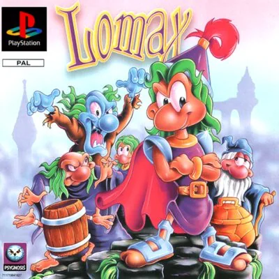

PlayStation
The Adventures of Lomax
- Año: 1996
- Desarrollador: Psygnosis
- Género: Plataformas
- Jugadores: 1 jugador
El malvado brujo Evil Ed ha hechizado a los lemmings y los ha convertido en sus esbirros. Lomax, el único que se ha librado, sale a rescatarlos. Es un juego de plataformas en 2D sobre fondos en 3D, con varios mundos de tres niveles cada uno. Lomax usa su casco mágico para liberar a sus compañeros y derrotar a los enemigos. Pese a su aspecto infantil, es bastante difícil.
Controles
qué botón lanza el casco (antes hay que cogerlo). Según las guías: A (○) lanza el casco, Y (□) usa la habilidad, Coin (Select) la elige y R (R1) corre.
Mando de PlayStation (digital).
| Panel | Juego |
|---|---|
 | ✕ · Saltar (mantener pulsado: saltar más alto; dos pulsaciones: girar sobre sí mismo para atacar) |
 | ○ |
 | R1 |
 | □ |
 | △ |
 | L1 |
 | R2 |
 | L2 |
 | Start · Pausar |
 | Select |
| + | Salir del juego |
El panel en PlayStation


Argumento
Recopilado de internet (2026-11-02).
En Lemmingland, el malvado brujo Evil Ed ha hechizado a los lemmings y los ha convertido en monstruos a su servicio: zombis, vaqueros, alienígenas… Solo se ha librado Lomax, un lemming caballero.
Armado con un casco mágico, Lomax sale a recorrer Lemmingland, desde los bosques hasta cuevas y castillos oscuros, para liberar a sus amigos. Cada enemigo al que vence vuelve a ser un lemming normal (y, fiel a su especie, se tira por el borde más cercano).
Final: tras atravesar los cuatro mundos, Lomax se enfrenta a Evil Ed para romper el hechizo.
Fuentes
Jugabilidad
Recopilado de internet (2026-11-02). Lo marcado con ⚠️ no está probado en la bartop.
- Estructura: 4 mundos con 18 niveles y 4 jefes, de desplazamiento lateral (detalle en «Guía de niveles»). Lomax solo aguanta dos golpes y no sabe nadar.
- Enemigos: son lemmings hechizados (zombis, vaqueros, alienígenas…). Al derrotarlos vuelven a ser lemmings normales y saltan al vacío.
- Ataque básico: dos pulsaciones de B (✕) hacen el giro, que derriba a los enemigos al chocar con ellos.
- Casco y habilidades: el casco se lanza como arma y protege de un golpe; los iconos dan habilidades de lemming (puentes, cavar…) para abrirse camino. Detalle en «Objetos».
- Vidas y continuaciones: limitadas. No guarda en la tarjeta de memoria: usa contraseñas (abajo). Las guías aconsejan apuntarlas y tener paciencia: es un juego de prueba y error.
Botones según las guías (⚠️ por confirmar)
El juego apenas explica los controles. Según las guías de la versión de EE. UU.:
| Mando de PS1 | Panel | Acción |
|---|---|---|
| ○ | A | Lanzar el casco |
| □ | Y | Usar la habilidad elegida |
| Select | Coin | Elegir la habilidad |
| △ | X | Casco extra (no está claro qué hace) |
| R1 | R | Correr |
Fuentes
Guía de niveles
Recopilado de internet (2026-11-02).
Son 4 mundos y 22 fases: 18 niveles y 4 jefes (coincide con el número de contraseñas de «Trucos y secretos»), más niveles bonus entre medias. Los escenarios van de exteriores a cuevas y castillos oscuros.
| Mundo | Fases |
|---|---|
| Mundo 1 | Nivel 1Nivel 2Nivel 3BonusNivel 4Nivel 5BonusNivel 6Jefe 1 |
| Mundo 2 | Nivel 1Nivel 2BonusNivel 3Nivel 4BonusNivel 5Nivel 6Jefe 2 |
| Mundo 3 | Nivel 1Nivel 2Nivel 3BonusNivel 4BonusJefe 3 |
| Mundo 4 | Nivel 1Nivel 2Jefe final (Evil Ed) |
- Niveles bonus: 2 en cada uno de los tres primeros mundos.
- Jefe final: Evil Ed, el brujo que ha hechizado a los lemmings.
- ⚠️ No he encontrado guías que expliquen cada jefe o los secretos de cada nivel: el vídeo (ver «Vídeos») es la mejor referencia.
Fuentes
Objetos
Recopilado de internet (2026-11-02). Lo marcado con ⚠️ no está probado en la bartop.
| Objeto | Qué hace |
|---|---|
| Casco mágico | Se lanza como arma y protege de un golpe (al recibirlo, se pierde). |
| Casco en llamas | El casco prendido en fuego: hace más daño al lanzarlo. |
| Icono de habilidad | Da una habilidad de lemming: construir puentes, cavar o volar obstáculos, entre otras. Se elige con Coin (Select) y se usa con Y (□) ⚠️. |
| Monedas | Al reunir suficientes, una vida extra. |
| Otros objetos | Invencibilidad temporal, saltar más lejos o atacar más fuerte. |
Trucos y secretos
Recopilado de internet (2026-11-02). Lo marcado con ⚠️ no está probado en la bartop.
Secretos
- Niveles bonus: 2 por mundo en los mundos 1 a 3.
- Helicóptero: se consigue con el truco de saltar niveles (abajo).
Contraseñas de nivel (versión de EE. UU.)
Se meten en la pantalla de contraseña. Columna «Panel»: los mismos botones en la bartop.
| Nivel | Mando de PS1 | Panel |
|---|---|---|
| 2 | ○ ○ ○ △ ✕ □ ○ ✕ | A A A X B Y A B |
| 3 | □ ○ □ △ ✕ □ ○ ✕ | Y A Y X B Y A B |
| 4 | ✕ ○ ✕ △ ✕ □ ○ ✕ | B A B X B Y A B |
| 5 | △ △ △ ○ ✕ □ ○ ✕ | X X X A B Y A B |
| 6 | ○ △ ○ ○ ✕ □ ○ ✕ | A X A A B Y A B |
| 7 | □ △ □ ○ ✕ □ ○ ✕ | Y X Y A B Y A B |
| 8 | ✕ △ ✕ ○ ✕ □ ○ ✕ | B X B A B Y A B |
| 9 | △ ✕ △ □ ✕ □ ○ ✕ | X B X Y B Y A B |
| 10 | ○ ✕ ○ □ ✕ □ ○ ✕ | A B A Y B Y A B |
| 11 | □ ✕ □ □ ✕ □ ○ ✕ | Y B Y Y B Y A B |
| 12 | ✕ ✕ ✕ □ ✕ □ ○ ✕ | B B B Y B Y A B |
| 13 | △ □ △ ✕ ✕ □ ○ ✕ | X Y X B B Y A B |
| 14 | ○ □ ○ ✕ ✕ □ ○ ✕ | A Y A B B Y A B |
| 15 | □ □ □ ✕ ✕ □ ○ ✕ | Y Y Y B B Y A B |
| 16 | ✕ □ ✕ ✕ ✕ □ ○ ✕ | B Y B B B Y A B |
| 17 | ○ ○ △ △ □ □ ○ ✕ | A A X X Y Y A B |
| 18 | △ ○ ○ △ □ □ ○ ✕ | X A A X Y Y A B |
| 19 | ✕ ○ □ △ □ □ ○ ✕ | B A Y X Y Y A B |
| 20 | □ ○ ✕ △ □ □ ○ ✕ | Y A B X Y Y A B |
| 21 | ○ △ △ ○ □ □ ○ ✕ | A X X A Y Y A B |
| 22 | ✕ □ ○ ○ □ △ □ ✕ | B Y A A Y X Y B |
Truco: saltar niveles (⚠️ sin probar)
- Durante la partida, mantén abajo + Start (1P) y pulsa arriba, △, ○, ✕, □ (en el panel: arriba, X, A, B, Y). Aparece un número a la izquierda de Lomax.
- Para pasar de nivel: mantén arriba + L1 + Select + Start.
- Con el truco activo, se puede volar con un helicóptero: L1 + □.
Select es el botón Coin, y Coin + L carga el estado guardado. El paso 2 puede cargar una partida guardada en vez de saltar el nivel. Las fuentes tampoco coinciden del todo en la secuencia.
Fuentes
Longplay

Partida completa de la versión PlayStation (126 min), de Gaming Exhibit: The Adventures of Lomax - PlayStation [Longplay].
Pulsa el minuto de un nivel para ver el vídeo desde ese punto.
Niveles
| Mundo | Fases |
|---|---|
| Mundo 1 | |
| Mundo 2 | |
| Mundo 3 | |
| Mundo 4 |